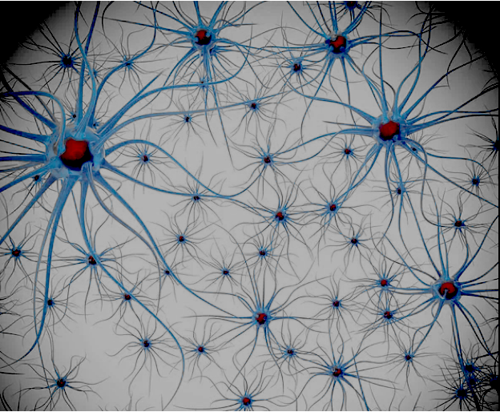

Réseaux de neurones
Le neurone biologique
Un neurone biologique ne s'active que si ses stimulations reçues
cumulées franchissent son seuil d'excitation.
Les neurones sont interconnectés et forment des réseaux de
neurones.
Ces réseaux sont capables d'apprendre à partir d'exemples,
ce qui est la base de l'intelligence artificielle.

Illustration libre de neurones biologiques
Le premier neurone artificiel: le perceptron
Ancêtre de tous les réseaux de neurones, le perceptron reproduit
la logique d'un neurone biologique :
Des calculs simples
Les stimulations sont pondérées puis cumulées, le résultat est comparé à un seuil par une fonction d'activation
Schéma d'un perceptron avec deux entrées
:
Dans la formule S = H(w1·x1 + w2·x2 − s)
La fonction d'activation H ( H vient du nom d'Oliver Heaviside, inventeur du perceptron) effectue un test sur le résultat du calcul :
Si le résultat est positif ou nul, la sortie est excitée (1) sinon la sortie reste non excité (0).
But de l'apprentissage
Le but de l'apprentissage est de trouver les bons poids et le bon seuil pour que le perceptron réponde correctement à un objectif pour toutes les entrées d'un ensemble d'exemples.
Illustration : piloter un feu tricolore
On veut utilliser un compteur qui permette de faire avancer les feux selon le jeu de test suivant:| compteur | entrée binaire | sortie visée |
|---|---|---|
| 0 | 00 | aucun feu |
| 1 | 01 | feu vert allumé seul |
| 2 | 10 | feu orange allumé seul |
| 3 | 11 | feu rouge allumé seul |
Comme un neurone ne peut pas gérer plusieurs sorties, il faut créer un réseau de neurones avec trois neurones, un pour chaque feu.
Réseau de trois neurones perceptron

Représentation matricielle des 3 neurones du réseau feu tricolore
Un réseau monocouche à 9 paramètres
Ce réseau est défini par une matrice de poids et un vecteur de seuils.Il a 2 entrées et 3 sorties, sa matrice de poids est de dimension 2x3 et son vecteur de seuils de dimension 3, au total il a 9 paramètres
Modestie assumée
Notre réseau est très simple, il ne peut pas gérer des situations plus complexes, mais il est suffisant pour illustrer le fonctionnement d'un réseau de neurones.A titre de comparaison, les réseaux de neurones profonds utilisés pour la reconnaissance d'images ont des millions de paramètres et des dizaines de couches.
Les LLM (Large Language Model) comme ChatGPT ou Mistral ont des centaines de milliards de paramètres et des centaines de couches.
Le fonctionnemet de base reste le même, mais la complexité est bien plus grande.